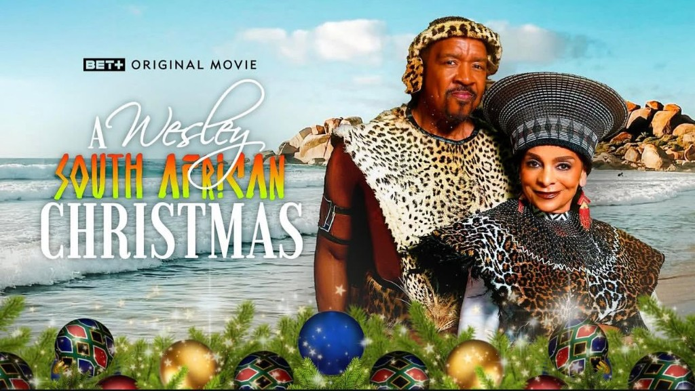
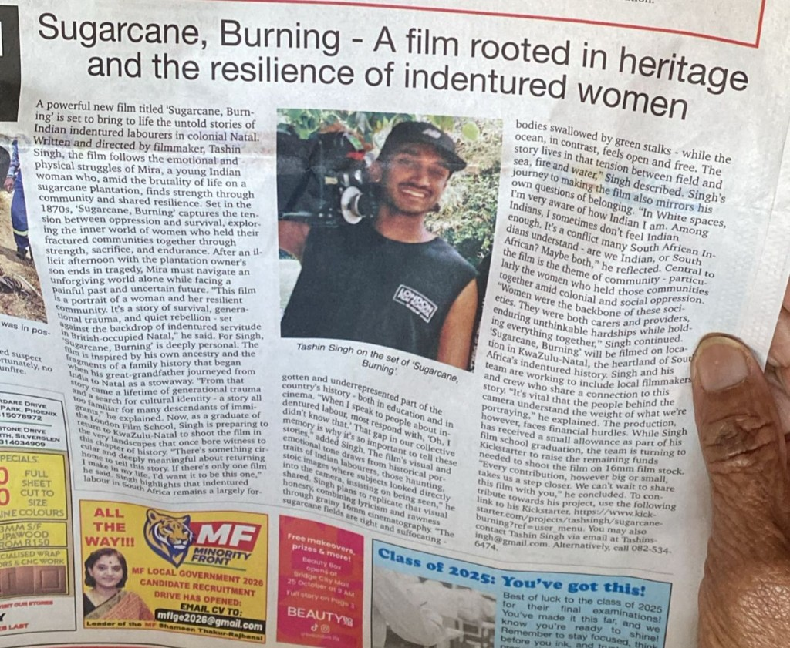
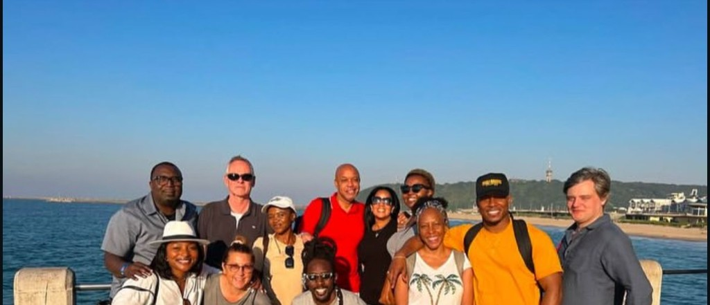

Sindisiwe is the owner and manager of Durban Film Production, specialising in services geared for several markets, including television stations, location scouting, location managing, unit managing, unit gear supply, security services, conferencing, high schools, and families (events) such as weddings. Sindisiwe T. Kumalo was selected as one of seven filmmakers in KZN to participate in the inaugural Location Scout programme facilitated by Neville Botha through the Durban Film Office. This programme included SHEREP, Fire Fighting level one, and location management. Using these skills, she has gone on to be a leading KZN location scout for several TV shows, films, and commercials.
Education
Starlight Flight School — Drone licence
IQ Academy — Human resource management
DMP — Video & photography
Ethekwini College — Civil engineering
Location scouting certificate, location management certificate, human resource management certificate, SHE representative certificate, introduction to OHSACT certificate, basic fire fighting certificate.
Experience
Producer
Productions Produced
Whoonga, Isimilo, Leading Lady launch & Zulu Love.
International Co-Production
Music Video — Anathi FT. Omarian

Movie — Wesley’s SA Christmas

Student film — Sugarcane Burning

Co-production — on location
Location scouting & management
Worked for various projects in different categories — movie, series, sitcom & adverts — from 2016 to date, including feature films, short films, Netflix films and series.
Projects include:
Qghomu Nation, Lachitheka Igazi, Red Bull culture commercial, Red Bull culture, mobile media, The River, Zulu Love, Bethina Wethu S1, Shaka Zulu, End Game, Blinde, Rugby Town, Mahamba Yedwa, Maluju Mame, The Spear, How to Ruin Valentine, Parental Advisory, Ultimate Braai Master, Sugar, What If I Still Love You, Love Island, How to Ruin Christmas, Killing of a Beast, iNhlawulo, Crossing the Line, The Queen, IFP commercial, Sugar Rush, Umjolo S1, Shaka iLembe (The Bomb Shelter Film), and more.
Camera operator / photography
Worked with Pep Conference, MEXWELL Foundation.
DOP / director
Directed Inyaniso.
Script writer & editor
Performed editing for Luthando (feature script).
Stage assistance
Assisted on Gospel Crowns Nothing for Mahala — Gazi.